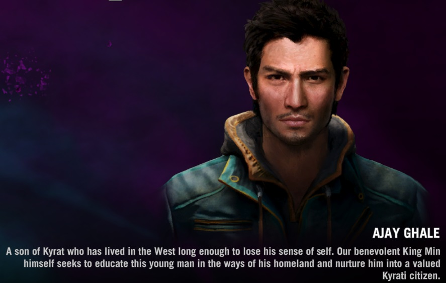
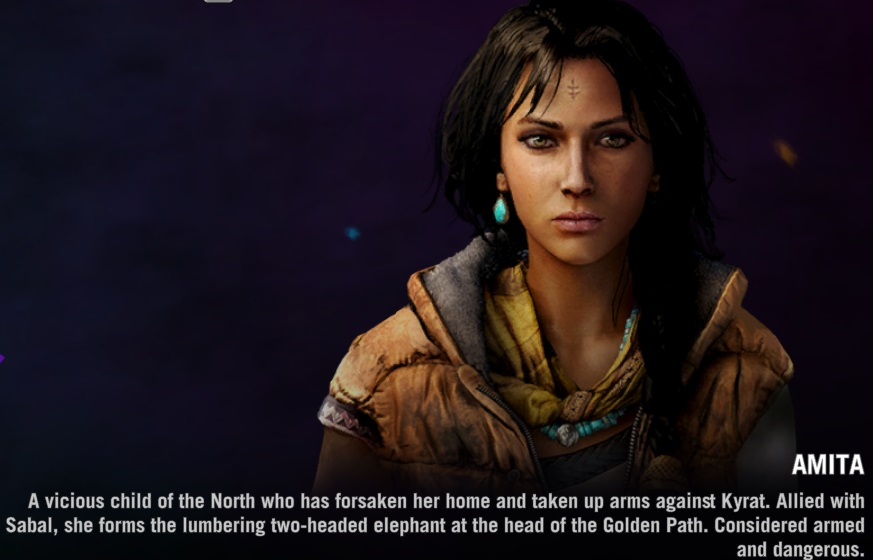
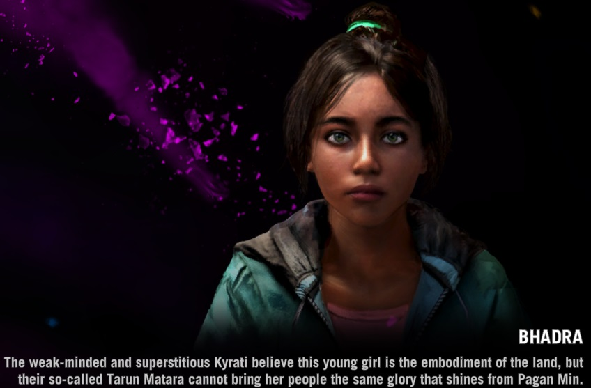
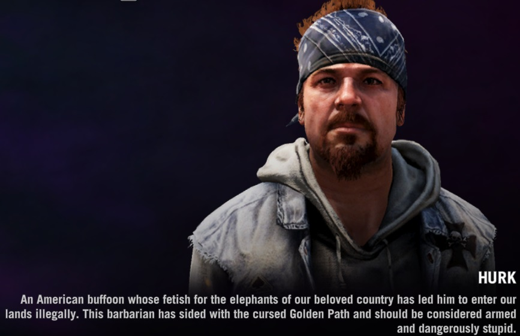
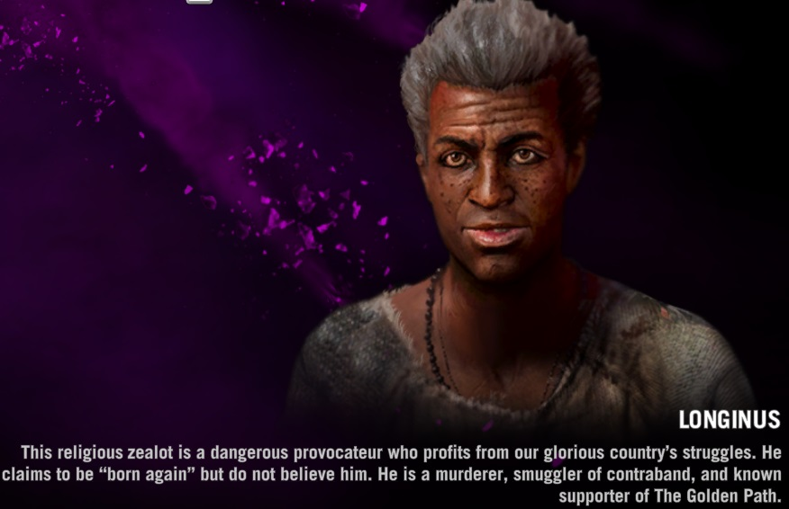
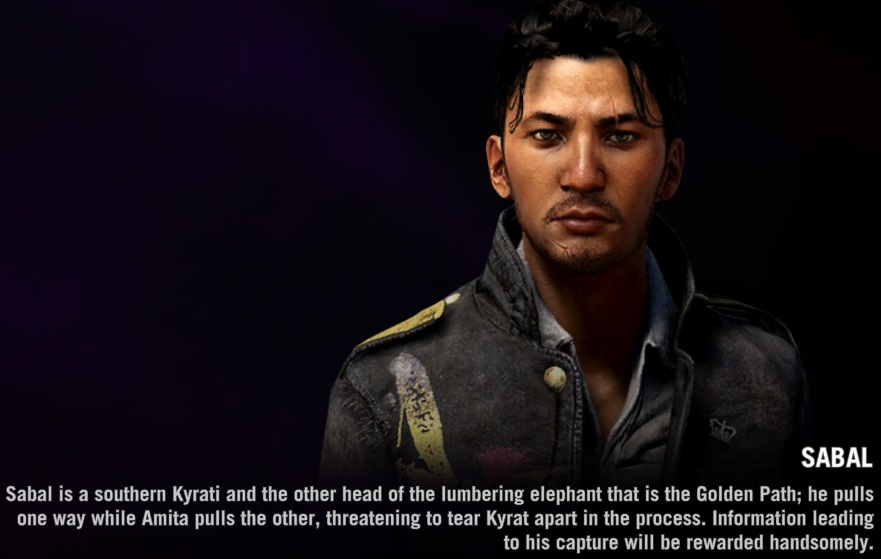
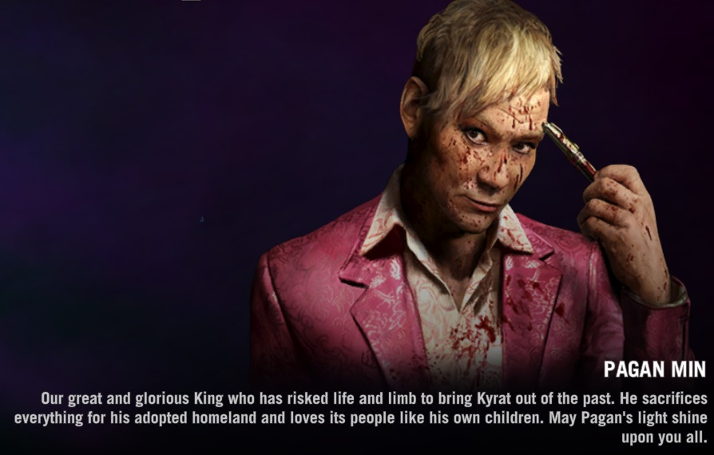

The major protaganist. You must help the Golden Path to destroy Pagan's empire and free the people of Kyrat!
One of the most powerful women in the Golden Path. She is trying to bring the Golden Path to victory and bring a new modern age to Kyrat.
A young teenager in the Golden Path. She is beleived to be the reincarnation of a important figure in Kyrati mythology.
The very dangerous and probably stupid American living in Kyrat, he his a de facto member of the Golden Path and will help you out anytime you need him.
An African warlord trying to repent for his sins by providing weapons for the Golden Path.
The other leader of the Golden Path. Fighting Pagan to free Kyrat and restore it to its' previous state before Pagan.
The main antagonist in the game. The ruler of Kyrat. Very eccentric and very dangerous. His propaganda and warriors keep the people of Kyrat oppressed.
